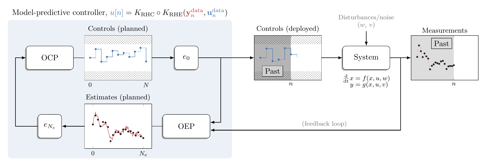

This course introduces optimization-based methods to automatically operate process systems. The main goal is to learn how to combine numerical optimization and dynamical systems theory to design digital solutions (i.e., feedback controllers) to control dynamical systems to optimally achieve high-level objectives. The focus is on model-based and receding-horizon control methods, with application domains in chemical and biochemical engineering.
Upon completing the course, the student should be able to
The course is graded based on 5 weekly homeworks (40%) and 1 final assignment (60%). There is no final exam.
| {{lec.id}} | {{lec.title}} | {% for f in lec.files %}{{f.name}} | {% endfor %}
The homeworks are accompanied by warm-up exercises implemented in Python (required packages: [requirements.txt]).
The material is mostly based on the following textbooks: